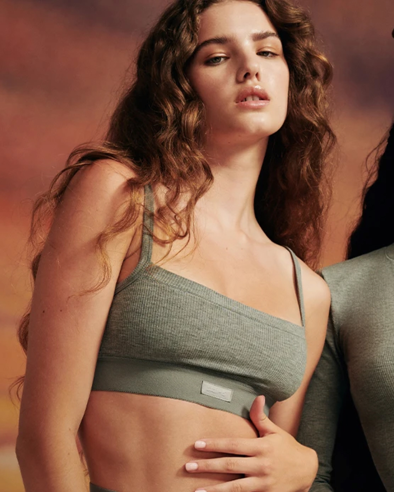
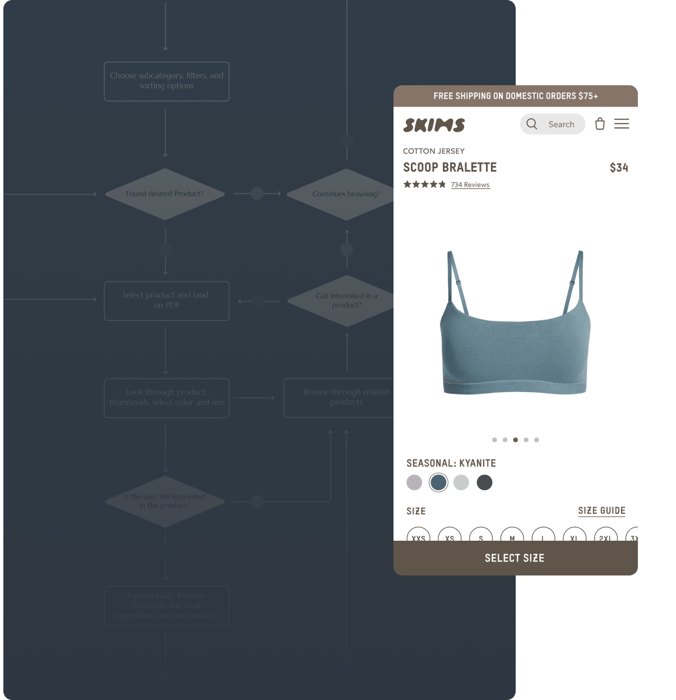
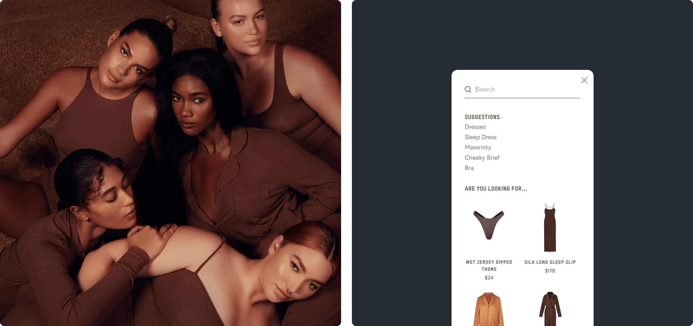
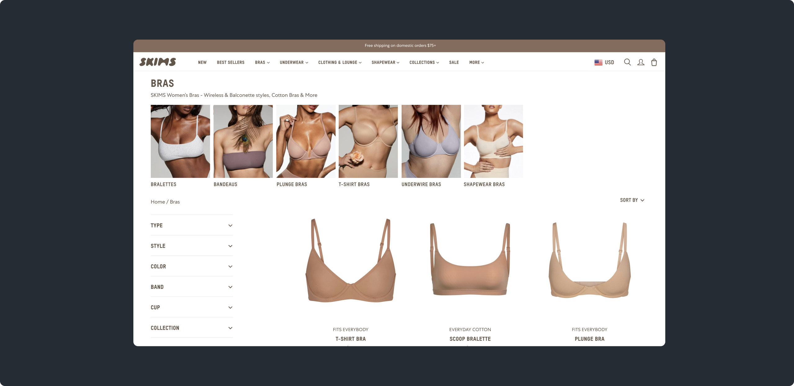
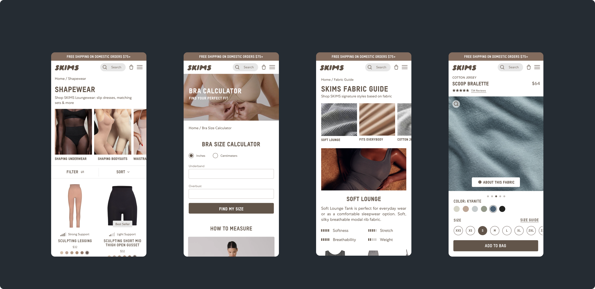
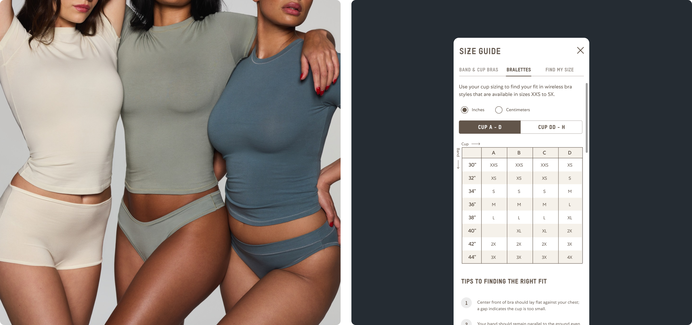
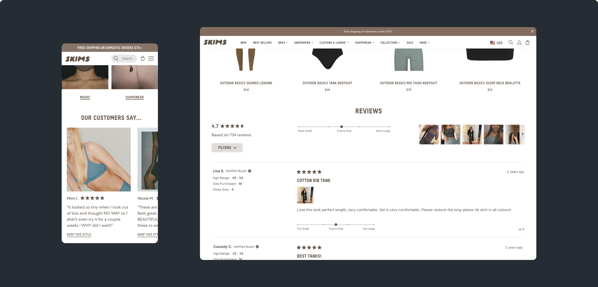
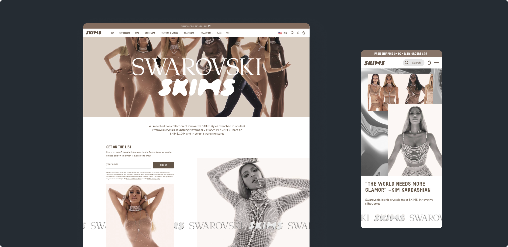
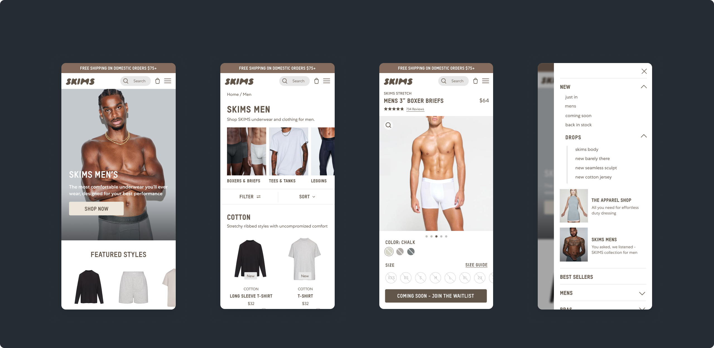

Evolving design and commerce strategy to support hypergrowth at scale
• Conversion strategy and performance optimization
• User research and ongoing AB testing
• Redefined site architecture and product discovery
• Strengthened purchase confidence
• Created scalable design system

The focus was on evolving the experience to better support both customer needs and business growth. Through UX audits, user research, and journey analysis, we identified friction across product discovery and purchase — where customers got lost, lacked confidence, or dropped off. The experience was also heavily desktop-focused, limiting mobile users.
I took a conversion-driven approach: quick wins, especially on Product Pages, reduced immediate browsing friction and ensured lift in conversion and AOV. Through AB testing and user interviews blah blah blah Simultaneously, I created a roadmap for larger structural changes: strengthening product discovery and building comprehensive confidence systems to minimize friction across the entire journey. Every initiative, big or small, was measured against its impact on conversion and growth.
For SKIMS, as the catalog grew from dozens to hundreds of SKUs across multiple lines, navigation became the critical friction point. Customers got lost browsing, and merchandising had no way to surface strategic collections or guide exploration. The navigation was transformed from an oversimplified, constraining system into an intuitive browsing experience. By expanding category menus, adding visuals, and restructuring mobile patterns to reduce friction, customers could discover product categories effortlessly. Streamlined and elevated search to make finding products fast and seamless.


With navigation and search strengthened, the next challenge was helping customers navigate the expanded product range across styles and fits. Through introduction of subcategory navigation on PLPs we were able to expose new and existing styles. Embedded Complete the Look section on PDPs helped guide discovery through related products and added strategic redirects to personalized collection links to keep customers exploring instead of hitting dead-ends.

For a DTC-native intimates brand, the digital experience is the cornerstone of growth. As SKIMS expanded rapidly across styles, fabrics, and occasions, the catalog created complexity that threatened that momentum. Customers faced decision fatigue: choosing a size, selecting a fabric, understanding compression levels, deciding what worked for what occasion. We built a confidence system throughout the shopping journey. Educational layers—fabric guides, sizing tools, fit calculators—worked alongside structural decisions about how and when information surfaced. The result was an experience that felt seamless and intuitive, reducing hesitation so customers could move through discovery and checkout with clarity.


Placing review highlights on the homepage served dual purposes: exposing customers to new products while building brand credibility through authentic voices. In the PDP flow, we designed a review section that surfaced customer sentiment and user-generated imagery—allowing shoppers to assess sizing, fit, and real-world wear. The result: customers made confident purchase decisions and return rates improved.

Systems for scale and performance SKIMSxSwarovski. We designed a flexible system that could be customized for major campaigns while maintaining brand consistency. When SKIMSxSwarovski launched, the system enabled us to create a distinctive campaign experience that drove traffic, engagement, and sales—proving the framework worked at scale.

When SKIMS launched menswear, it wasn't just adding a new collection—it was expanding the brand into a new market. We had to think strategically about how to integrate it into the existing platform while giving it room to establish its own identity and presence. Leveraging the design system we had built, we created a seamless experience that supported this major category expansion.
